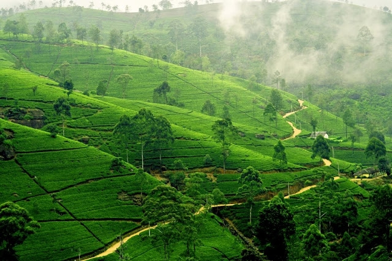
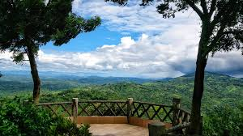

- Sylhet 
- Cox's Bazar
- Bandarban 

Sylhet is a major city and division in northeastern Bangladesh, known for its lush tea gardens, hills, and historical significance. It is a metropolitan city and an important commercial center, often called the "City of Saints" due to the presence of the shrine of Hazrat Shah Jalal.
Sylhet is situated on the banks of the Surma River and surrounded by the Jaintia, Khasi, and Tripura hills.
Cox's Bazar is a city, fishing port, tourism center, and district headquarters in southeastern Bangladesh, renowned for its long, sandy beach. It's also known for the world's largest refugee camp and historical significance as a settlement for Arakanese refugees. The area offers a mix of natural beauty, cultural attractions.
Bandarban is a district in southeastern Bangladesh, known for its hilly terrain and rich tribal culture. It's part of the Chittagong Hill Tracts and is the remotest and least populated district in the country. Bandarban town, the district headquarters, is a popular tourist destination, offering attractions like Golden Temple, waterfalls.